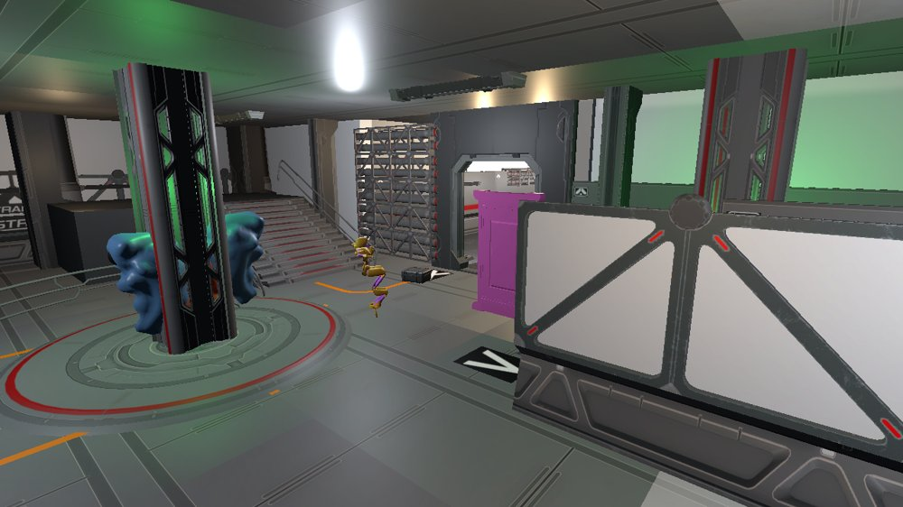
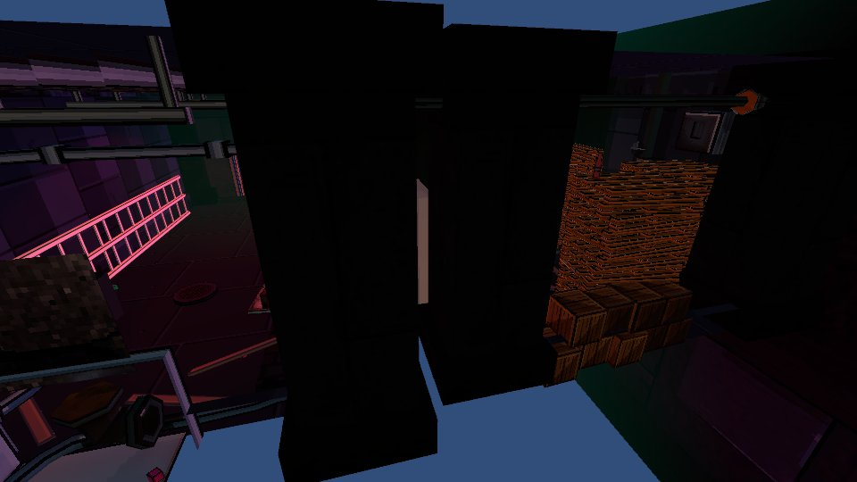
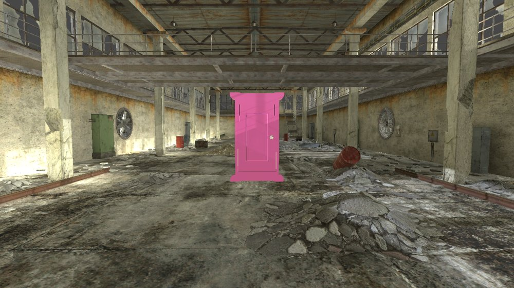
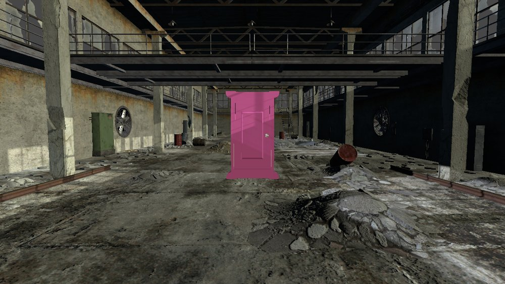
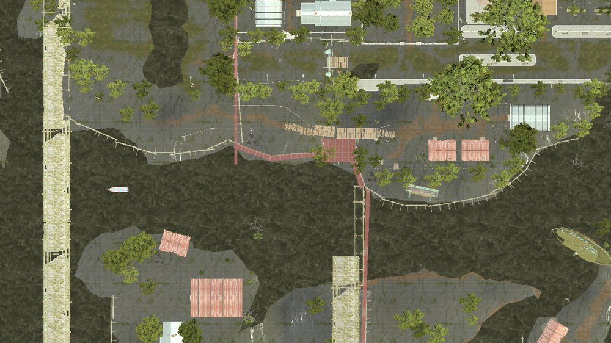

在实验室接单，推开一扇门进入层域，在规则压迫下回收异常物——并于归途门锁死之前撤回。电量即生命值，黑暗即倒计时。
玩法循环：实验室整备 → 推门进入层域 → 回收异常物 → 撤离窗口内归返 → 收容入账与电费结算 → 休整再出发。
场景链：实验室 ⇄ Metro 站；实验室 ⇄ 工厂·昼 ⇄ 工厂·夜 ⇄ 水淹区。门内可见对面世界的实时取景，跨过门平面即传送。
本册：玩法思维导图与关卡线性切换为主线，场景截图集中一页速览。基于 2026-10-26 可玩版本编制。
门是可交互实体（E 开关，动画约 2.6s）；传送门是门框内板的实时取景投影——把对面世界渲染进门洞，跨过门平面 0.25m 提前面即传送，落点恒在对门门槽内、朝向保持行进方向。
进入层域武装 600s，HUD ≤120s 红色闪烁；归零关门并锁死 E 键（门关 = 穿行被拦）；玩家回实验室即复位解锁。多层域共存靠「复位须在实验室、锁门须在本层」两道守卫。
命名约定 -A 后缀在来路侧，运行时按门名自动配对；门开着的世界与玩家当前世界永不卸载，同时存活上限 5 个。走近 15m 预载、远离卸载，光照随世界隔离。

唯一没有异常的世界：黑色天空盒下的孤立科研设施。门口取手电筒、订单板接单，归来把异常物送进两段式收容台；恒不耗电，也是瘫倒重启落点。房内两扇门通往 Metro 与工厂·昼。

阈限站厅 + 隧道，抬高 +93.9m 垂直分层。核心规则「渐渐熄灭」：五灯组每 90s 熄一组；停电 1 电/s、黑暗 ×1.5。解法 = 死端配电室三线谜题，通关全站复明并解锁车厢与充电桩。

排班钟每 240s 昼夜轮换；在班的世界醒着，歇班的世界死寂（机器沉睡、门锁死）。谜题 = 按值班排班表顺序启动昼侧两风机 + 夜侧送料机，必然跨昼夜往返；错序全厂复位。

夜班异常显形：自开的生产线与巡检灯束只在这一侧苏醒；谜题完成后排班表变锁定器——锁定班次消除缺陷（锁昼开门 / 锁夜平息异常），此后每 60s 可改锁。深区泵房夜班开放，交接本藏于木箱。夜班不掉电，压迫感来自轮换而非黑暗。

链式门终点站：从工厂·夜深处推门而来，落在积水与浓雾占据的地面。当前为美术壳——地形、水、雾与 16 盏环境灯就位，素材自带 8 个环境音效与混响；玩法闭环为下一大项（提案：积水短路 ×2 耗电、扳手关 3 个排水阀、防水涂层增益）。
双通道独立叠加：环境通道（层域规则）+ 手电通道（+0.5 电/s）；受创也扣电。BillingLedger 按照明 / 环境 / 机动 / 受创四类记账，收容入账时生成电费账单。
电量 ≤50 锁冲刺、≤25 锁跳跃，蹲伏永不关闭，保留机动下限，把资源压力转成路线决策；实验室恒不耗电，工厂夜班不掉电。
电量归零强制休眠，起身动画（Dead → GetUp → Idle）后在实验室重启；惩罚 = 携带的异常物与档案散失一半（队尾先丢，已收容不动）。
实验室门旁与 Metro 门区各一处拾取物，F 开关；开灯照明中不吃黑暗 ×1.5，灯锥强制逐像素渲染并附近场补偿点光。万用表为 Metro 配电室谜题道具。
底部道具栏 + 物品图标，异常物容量 5、拾取范围 1.5m；全游戏唯一交互键 E，由交互中枢裁决最近交互物（门的交互范围 3m），两段式收容台先开盖再入账。
收容图鉴：#001 起逐条档案卡（名称 + 档案文案）；电费账单：入账时居中弹 ~6.5s 四类明细；值班播报：进层域打字机播报当班规则。HUD 按世界切换整备 / 订单双形态。
撤离窗口 600s（≤120s 红闪）· 渐熄 90s × 5 组 · 停电 1 电/s（黑暗 ×1.5）· 换班 240s · 锁定改锁 60s · E 开门 10s 自动关 · 穿行冷却 0.6s · 异常物容量 5 · 拾取 1.5m / 交互 3m · 手电 +0.5 电/s
内容基于 2026-10-26 可玩版本与项目实测截图编制；完整截图图鉴与逐玩法截图卡另存于富版手册（build/gameplay-mindmap-rich.pdf）。玩法范围以当前可玩版本为准，不含提案中的未来扩展。